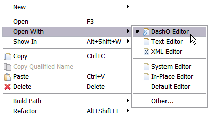

Overview
The DashO Eclipse Plugin allows you to create, edit and execute DashO project files from within Eclipse.
Installation
Locating your Eclipse plugins directory
First you will need to locate the directory where Eclipse is installed. We'll call this ECLIPSE_HOME in this document. Inside ECLIPSE_HOME is a plugins directory: this is where the plugin will be installed.
Removing previous versions of the plugin
Only one version of the plugin can be installed at a time. If you have previously installed the plugin you will need to remove the old version first. To uninstall the plugin delete any file that starts with com.preemptive.dasho in the ECLIPSE_HOME/plugins directory.
Installing the plugin
To install the plugin you need to copy it into the ECLIPSE_HOME/plugins directory. The plugin can be found in the DASHO_HOME/eclipse/plugins.
Start Eclipse
Once the plugin files have been copied you can start Eclipse. To check for the presence of the plugin you can go to Window > Preferences…. There you should see see an entry for DashO in the tree:
If DashO does not appear in the tree, run Eclipse from the command line with the -clean option.
Configure the plugin
In Eclipse go to Window > Preferences…. Select the DashO entry in the tree:
Click on the Browse button and select the directory where DashO has been installed. Now click on OK. The plugin is now configured.
Using the plugin
Creating a new DashO project file
To create a new DashO project file go to File > New > Other…. On the list of wizards you will see two choices for creating a DashO project file:
You can either create an empty project file or run DashO's new project file wizard. Selecting the new project file wizard runs the wizard built into DashO. To create an empty project file select Project File and click Next.
Select where you wish to create the project file and the name of the project file and click Finish. The new file will be created and DashO will begin editing of the project file.
Opening a DashO project for editing
DashO's project file will be displayed as a document with the DashO logo superimposed. You can edit the project files using DashO's user interface or as an XML or text file. You can choose which one to use by right clicking on the project file and selecting Open With:
The default is to use DashO's user interface. Eclipse remembers the choice you make as the default for that file. When you double click on the project file the default editor is launched.
Executing a DashO project
To execute a DashO project from within Eclipse right click on a project file and select Run As:
The output from the run is sent to the Console tab.